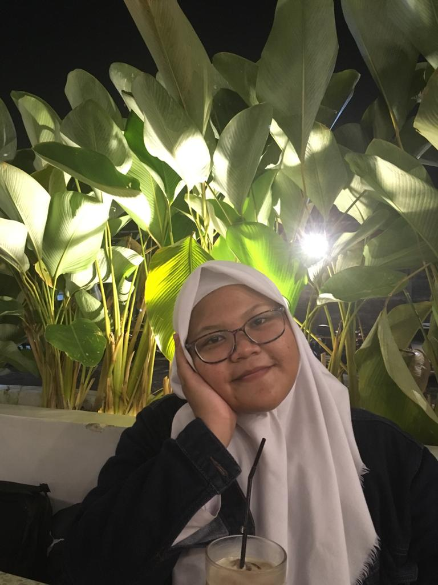

Namaku Imelda Mahendro Putri, biasanya aku dipanggil Imelda tapii khusus di kelas, aku dipanggil Meli hehehe (soalnya dikelas ada dua imel wkwkwk). Sekarang aku bersekolah di Bogor, aku memilih melanjutkan sekolah di sekolah vokasi yang bernama SMK-SMAK Bogor. Udah pada tau beluum itu sekolah apa? Jadi SMK-SMAK Bogor itu sekolah vokasi berbasis kimia, yang hanya mempunyai satu jurusan yaitu analisis kimia. Sekolah ini sangat amat berbeda dengan sekolah lainnya, karena yang pasti terdapat banyak laboratorium dannnn kita akan sekolah disini selama 4 tahun. Jadi, jangan kaget kalau kalian denger ada kelas 13 hehehe. Gimana? Jadi tertarik buat cari tahu banyak hal lagi?
Kalian bisa cari tahu semuanya disini!👇
Kalau udah selesai cari-cari informasinya, sekarang yuk kita kenalan!

That's all biodataku. Sekarang aku mau ceritain tentang hobi aku, yaitu membaca novel. Aku sudah mulai hobi membaca novel sejak aku menginjak bangku sekolah dasar. Kala itu aku sering bertukar novel yang kupunya dengan teman-temanku yang sama-sama mempunyai hobi membaca novel. Bagiku, membaca novel itu sungguh mengasyikkan karena kita bebas mengimajinasikan jalan cerita yang telah kita baca bahkan terkadang aku juga mendapat berbagai ilmu baru dari novel. Beberapa novel favoritku adalah terbitan Tere Liye, aku mempunyai beberapa koleksinya yang biasa kubeli pada saat penerimaan rapot karena aku ingin mempunyai bahan baca kala liburan. Jika aku bisa merekomendasikan novel favoritku. Aku akan merekemondasikan novel berjudul Pulang dan yang satu lagi berjudul Pergi. Pokoknya kedua novel itu seru sekali, wajib banget kalian baca!
Buat kalian yang masih pengen tahu tentang aku, bisa langsung follow instagram aku ya @imeldamahen atau kalian bisa langsung follow aku dengan cara
klik tombol dibawah!👇